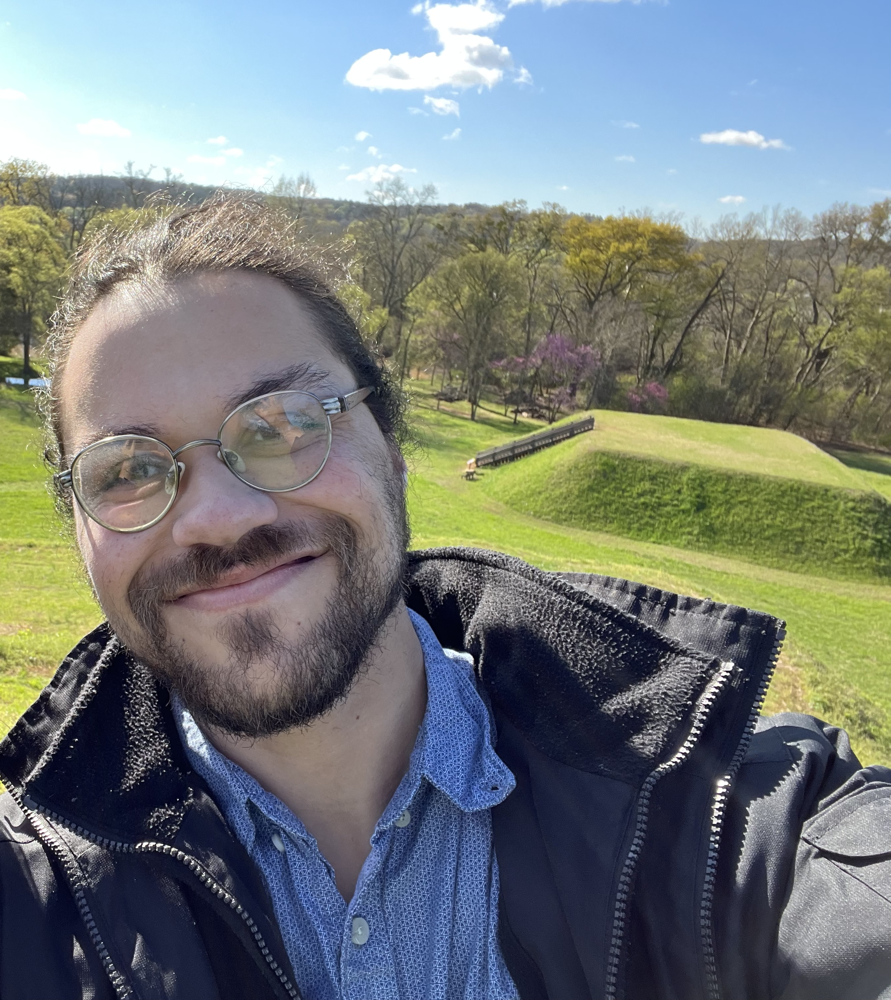

Sean Molezion Resume 2023 | Web Developer |

|| ADDRESS: 235 Creek Spring Ct. Alpharetta, GA 30022 || EMAIL: sean.molezon@icloud.com || PHONE:(470)-843-5156 ||
Summary Statement:
Hello everyone, my name is Sean Molezion. It's a pleasure to meet you! I am an up and coming/new Web Developer. I am self taught with under a year of experience. Some of my hobbies include music production, photography and playing/spending time with animals. I am also a gamer, video games are a huge passion of mine. Ever since I was young video games have inspired me tremendously. Games have taught me so many things over the years, and provided non stop fun. The excitement and experience I have gained from video games is extremely beneficial, I cannot put into words my love and appreciation for games!
Education:
- Centennial High School : HS Diploma (2010)
- Georgia Perimeter College: Associate of Science Degree - Business Administration (2013)
Work Experience:
- Volunteer Kid's Coordinator : Saint Andrew's Church - 5 years (2006-2011)
- Cashier : Sam's Club - 1 year (2012-13)
- Diabetic Research Study Participant- Endocrine Research Solutions (2014)
- Hardware Department Lead: Home Depot - 1 year (2016-2017)
- Landscaper : Inside Out Remedies llc - 3 years (2019-22)
- RBT : North Georgia Autism Center - 1 year (2022-23)
Skills:
- Photography - 5 years
- Adobe Premier Pro - 5 years
- Videography - 6 years
- Music Production - 13 years
- Gaming - 25 years
Certifications/Achievements:
- RBT Certification (2022)
- Produced and Engineered many songs
- Employee of the month: Home Depot (2016-17)
- Former Small Business owner - Inside Out Remedies llc. (2019-22)